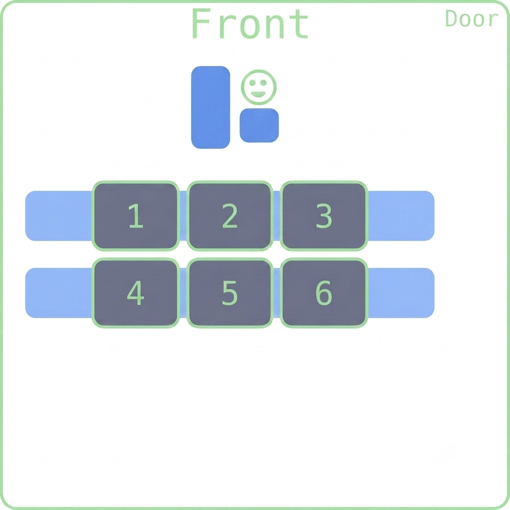

Functional Libraries
September 4, 2026
Happy Friday!!
- Today’s Grouping: Scan the QR code or go to https://tools.jedrembold.prof/daily
- Class code is
2FvLMX - Introduce yourselves! Fun question: If you had a magic box that consumed one type of object and output another, what would the inputs and outputs be?
